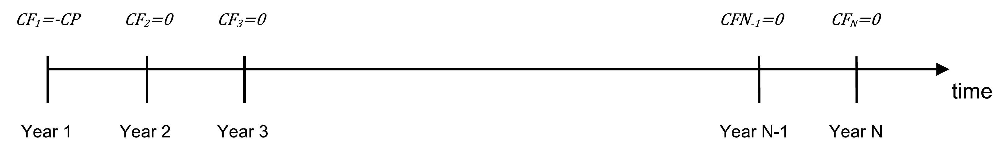
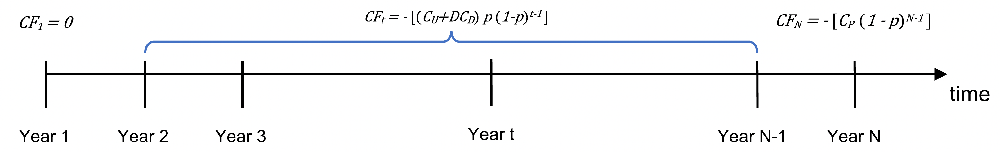
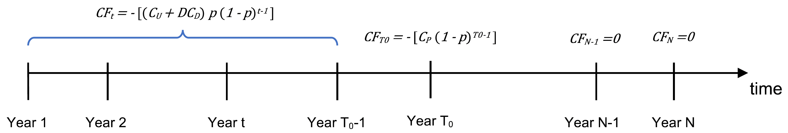
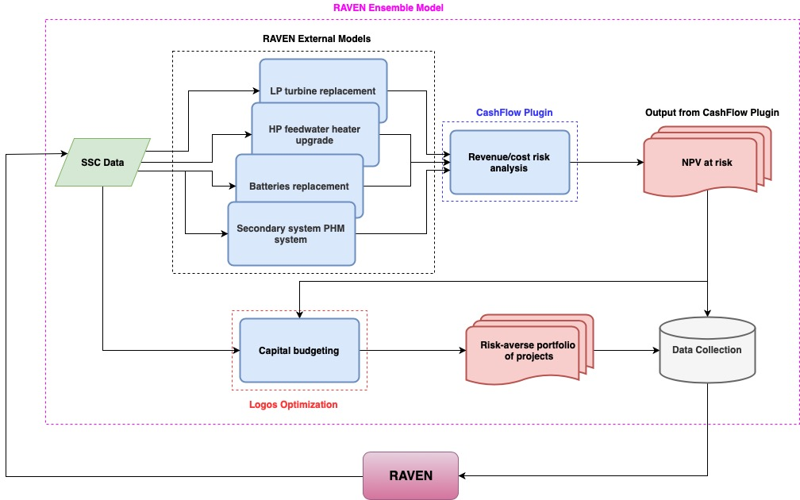

SSC Cashflow and NPV Models
Imagine a portfolio of candidate projects, in which some of the decisions involve either replacing an item now or postponing replacement and facing potentially higher maintenance and replacement costs. We assume the item must either be replaced now or in the future, and it is in this context that we describe the appropriate cashflow calculations. We then extend the discussion to allow the planned replacement to occur in year 2 or 3, rather than in year 1.
We assume that doing nothing is not an option, since the items under consideration are of significant importance and, if not replaced in due course, would impose an unacceptable risk to either safety or production.
Notation:
p: probability of item failure for one year
C_P: cost of planned replacement
C_U: cost of unplanned replacement
C_D: cost of shutdown per day
D: number of days plant is off-line, if a shutdown occurs
N: number of years
R: discount rate
We could incorporate additional parameters, such as weekly or monthly inspection costs, fixed costs of shutdown in addition to the daily costs specified above, etc. The setting we describe allows us to illustrate key ideas in the cashflow calculations for computing NPV.
We further assume that, if we do not replace the item, its failure time is a random variable following a geometric distribution where the probability of failure in one year is p (i.e., probability of survival over one year is 1-p). Thus, if the plant faces a 20-year decision period, the probability of survival to year t is (1-p)^t, and the probability of failing in year t is p(1-p)^{t-1}.
A useful construct for the calculations is to visualize a coin flip for each year, yielding a fail or no fail event, and immediately after the flip appropriate costs are incurred.
If the item is not replaced today (t=1), the expected replacement cost in any year t = 1,2,\ldots,N-1 is:
(49)\text{Expected Replacement Cost in Year } t = C_U \, p (1-p)^{t-1}
Here, we incur this cost only if the item survived years 1 to t-1 and failed in year t.
Since we assume the item must be replaced in year N if it has not already failed, the expected replacement cost in year N is:
(50)\text{Expected Replacement Cost in Year } N = C_P (1-p)^{N-1}
To illustrate downtime, assume shutdown costs of C_D per day. The expected downtime cost in year t=1,\ldots,N-1 is:
(51)\text{Expected Downtime Cost in Year } t = D\,C_D \, p (1-p)^{t-1}
More generally, we can express reliability-related costs with:
(52)Re\_Cost(p, t, C_1, C_2, \ldots, C_M)
There are two relevant time-series of cash flows: replacing now and replacing later.
If replaced today (time t=1), we incur the planned replacement cost C_P.
For replacing later, for t = 1,\ldots,N-1, the expected cash flows are:
(53)\text{Cash Flow Replaced in Year } t = -\left[(C_U + D C_D) \, p \, (1-p)^{t-1} \right]
And for the final year:
(54)\text{Cash Flow Replaced in Year } N = -\left[ C_P (1-p)^{N-1} \right]
All cash flows are costs and therefore negative.
{kind=link}

Figure 2 Graphical representation of option 1: replace now.
{kind=link}

Figure 3 Graphical representation of option 2: replace later.
The NPV of option 1 is:
(55)\text{NPV option 1} = -C_P
The NPV of option 2 is:
(56)\text{NPV option 2} = -\left[ \sum_{t=1}^{N-1} \frac{(C_U + D C_D) p (1-p)^{t-1}}{(1+R)^{t-1}} + \frac{C_P (1-p)^{N-1}}{(1+R)^{N-1}} \right]
The difference between the two NPVs is:
(57)\text{NPV} = -C_P + \left[ \sum_{t=1}^{N-1} \frac{(C_U + D C_D) p (1-p)^{t-1}}{(1+R)^{t-1}} + \frac{C_P (1-p)^{N-1}}{(1+R)^{N-1}} \right]
If \text{NPV} > 0, the decision is to replace today.
Planned Replacement at T_0
Now we allow delaying planned replacement to year T_0, at the risk of possible failure before then.
For t = 1,\ldots,T_0 - 1, the cash flow is:
(58)\text{Cash Flow Replaced in Year } t = -\left[(C_U + D C_D) p (1-p)^{t-1}\right]
For t = T_0, the expected planned replacement cash flow is:
(59)\text{Cash Flow Replaced in Year } T_0 = -\left[ C_P (1-p)^{T_0 - 1} \right]
{kind=link}

Figure 4 Graphical representation of option 1: planned replacement at T_0.
The NPV for planned replacement at T_0 is:
(60)\text{NPV option 1} = -\left[ \sum_{t=1}^{T_0-1} \frac{(C_U + D C_D) p (1-p)^{t-1}}{(1+R)^{t-1}} + \frac{C_P (1-p)^{T_0-1}}{(1+R)^{T_0-1}} \right]
If T_0 = 1, this reduces to -C_P.
Option 2 (delay to N) has NPV:
(61)\text{NPV option 2} = -\left[ \sum_{t=1}^{N-1} \frac{(C_U + D C_D) p (1-p)^{t-1}}{(1+R)^{t-1}} + \frac{C_P (1-p)^{N-1}}{(1+R)^{N-1}} \right]
Thus, the incremental NPV is:
(62)\text{NPV} = \sum_{t=T_0}^{N-1} \frac{(C_U + D C_D) p (1-p)^{t-1}}{(1+R)^{t-1}} + \frac{C_P (1-p)^{N-1}}{(1+R)^{N-1}} - \frac{C_P (1-p)^{T_0-1}}{(1+R)^{T_0-1}}
A new RAVEN External Model with subType="LOGOS.IncrementalNPV" is used to
compute the NPVs described above.
Example RAVEN Input XML
<ExternalModel name="rvi_model" subType="LOGOS.IncrementalNPV">
<variables>fp,rvi_npv_a,rvi_npv_b</variables>
<alias variable="rvi_p_failure" type="input">fp</alias>
<Cp>19.82</Cp>
<Cu>39.64</Cu>
<fp>0.05</fp>
<Cd>1.</Cd>
<D>30</D>
<options>
<Td>1, 4</Td>
<output>rvi_npv_a,rvi_npv_b</output>
</options>
<discountRate>0.03</discountRate>
<startTime>2019</startTime>
<lifetime>20</lifetime>
</ExternalModel>
External Model Parameters
Cp: float, required – cost of planned replacementCu: float, required – cost of unplanned replacementCd: float, required – cost of shutdown per dayD: integer, required – days plant is off-linefp: float, required – probability of item failure over one yeardiscountRate: float, required – discount rateinflation: float, optional (default 0.0)tax: float, optional (default 0.0)HardSavings: float, optional (default 0.0)count: int, optional (default 1)startTime: int, requiredlifetime: int, required
Options:
Td: comma-separated integers specifying delay lengthsoutput: output variable names (must appear under<variables>)
The parameters Cp, Cu, fp, Cd, inflation, tax may be sampled by RAVEN. If
specified in the XML, they are replaced by sampled values.
Example Incremental NPV Output CSV
fp,rvi_npv_a,rvi_npv_b
...
Note
The TEAL plugin is required to compute NPVs. See: https://github.com/idaholab/raven/wiki/Plugins
{kind=link}

Figure 5 Risk-informed capital budgeting via RAVEN and RAVEN plugins.